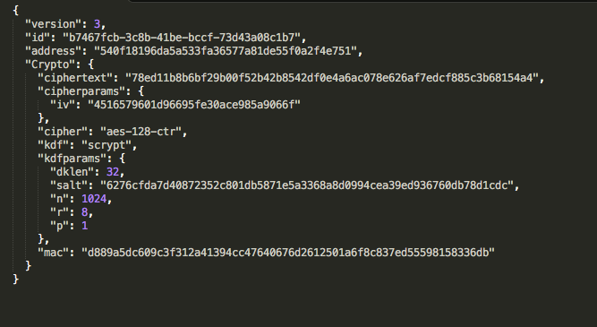

Keystore 文件是区块链钱包存储私钥的一种文件格式 (JSON)。它使用用户自定义密码加密，以起到一定程度上的保护作用，而保护的程度取决于用户加密该钱包的密码强度，如果类似于 123456 这样的密码，是极为不安全的。在使用 Keystore 时有两点需要注意：
1. 使用不常用，并且尽可能复杂的密码加密 Keystore 文件；
2. 一定要记住加密 Keystore 的密码，一旦忘记密码，那么你就失去了 Keystore 的使用权，并且 XToken 无法帮你找回密码，所以一定要妥善保管好 Keystore 以及密码。
Keystore 的样式
PS：Keystore 的密码是唯一、不可更改的，如果想更改钱包密码需要使用助记词或明文私钥重新导入钱包，并使用新密码加密，生成新的 Keystore。